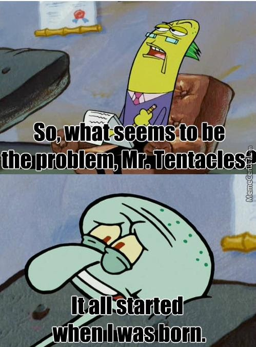
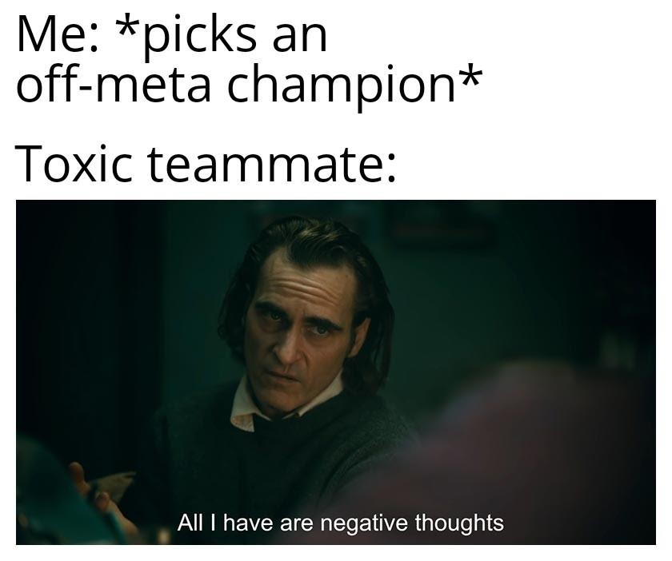
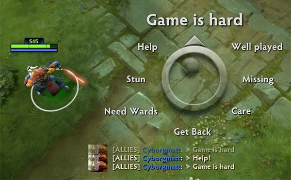
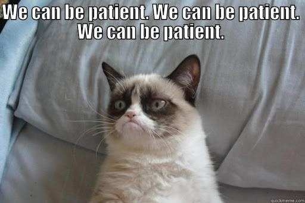

Positive Mental Attitude (PMA) adalah sikap/pemikiran ataupun mental positif dalam bermain game (bisa juga dalam kegiatan lain). Nah, biasanya mental positif sangat susah untuk dibangun dan diterapkan dalam game karena banyak faktor yang sering membuat kita emosi, entah itu anggota sesama tim yang badplay, ada player yang suka nge-troll/tidak serius bermain, bisa pula karena toxicity yang kuat diantara player sehingga membuat game menjadi tidak asik lagi untuk dimainkan. Yang ada kita gelut ngetik/voice chat kata-kata kasar sepanjang game. Iya kan? Ngaku dah. Akhirnya, saat kita kalah, yang ada kita emosi ke diri sendiri atau player lain dan membuat kondisi pikiran kita capek karena sisa-sisa aura negatif. Mari dicek tips-tips menerapkan PMA dalam game!
1. Tidak Membawa Masalah Kehidupan ke Game
Jelas saja, jika anda-anda sekalian membawa emosi dari masalah kehidupan anda ke dalam game, otomatis performa tidak akan maksimal dan pikiran akan selalu mengarah ke arah yang negatif. Jadi, selalu bersihkan emosi buruk dari kehidupan sebelum bermain game, agar lebih fokus dan tentunya lebih PMA lagi.
2. Stay Positive
Ini sih sudah pasti ya, dimanapun kita harus mencoba untuk positif. Memang sulit, tapi lama-kelamaan pasti terbiasa kok. Caranya? Kalau terjadi sesuatu yang tidak kita inginkan, kita harus melihat sisi positifnya. Setiap keburukan yang terjadi dalam game pasti ada hal positif yang masih bisa diambil. Selalu biasakan juga untuk berpikir tentang kemenangan, dengan begitu kalian juga akan lebih fokus bermain untuk menang.
3. No Blame No Flame
Blame/Flame adalah aksi menyalahkan player lain atas kesalahan yang mereka perbuat dalam game. Nah, ini nih. Ini dia yang bikin kalian kalah dalam game. Karena ketika kalian melakukan hal ini, pasti player yang kalian blame auto tidak fokus mainnya. Bisa jadi mereka menerima, bisa jadi mereka marah balik ke kita, atau lebih parah lagi mereka akan disconnect atau menyerah. Kalau ini terjadi, sudah pasti perang chat/voice chat tidak bisa dielakkan dan akan membuat lingkungan game menjadi rusak. Kalian pun juga tidak akan fokus ke permainan kalian sendiri melainkan ke player yang di-blame. Hal seperti ini jangan ditirukan ya gamers, karena ini bisa mengakibatkan pikiran kalian dan tim kalian dalam game rusak alias negatif.
4. Tetap Sabar, Ambil Nafas, dan Minum
Oke, ini poin yang terakhir. Perlu disadari ya guys bahwa game itu permainan. Jadi, menang kalah biasa. Jangan sampe kalian banting PC atau Android kalian karena kalah dan emosi. Kalian mau jadi Pro Player? Bro, Pro Player mah mentalnya gak tempe dan mereka selalu PMA (sebagian besar sih begitu, wkwkwk). Jadi, kalau kalian main serius dan tetap kalah, coba evaluasi diri sendiri dulu ya gamers. Coba tarik nafas dan minum saat kalian emosi dalam game, terus tenangkan diri kalian. Habis itu, langsung deh lanjutin gamenya dengan mindset yang baik dan benar alias PMA. Kalo ada yang toxic/blame/bla bla bla gimana? Langsung saja gunakan fitur ignore/mute/report pada game. Kalau ada player yang membuat kalian tidak fokus, untuk apa ditanggapi? Langsung saja bungkam mereka pakai fitur-fitur tadi. Jadi, kalian bisa fokus ke game dan tidak fokus ke player tadi.
Udah ngerti dong sekarang maksud PMA? Kalian juga pasti sudah mulai bisa menerapkan PMA setelah ini. Dijamin, winrate kalian akan naik drastis setelah kalian bisa menjadi pribadi PMA yang sesungguhnya (hahahaha). Pada akhirnya, permainan tetap permainan ya guys. Game diciptakan agar player bisa merasakan kesenangan saat dimainkan. So, good luck and have fun!
References
Based on own experiences – 19 June 2021